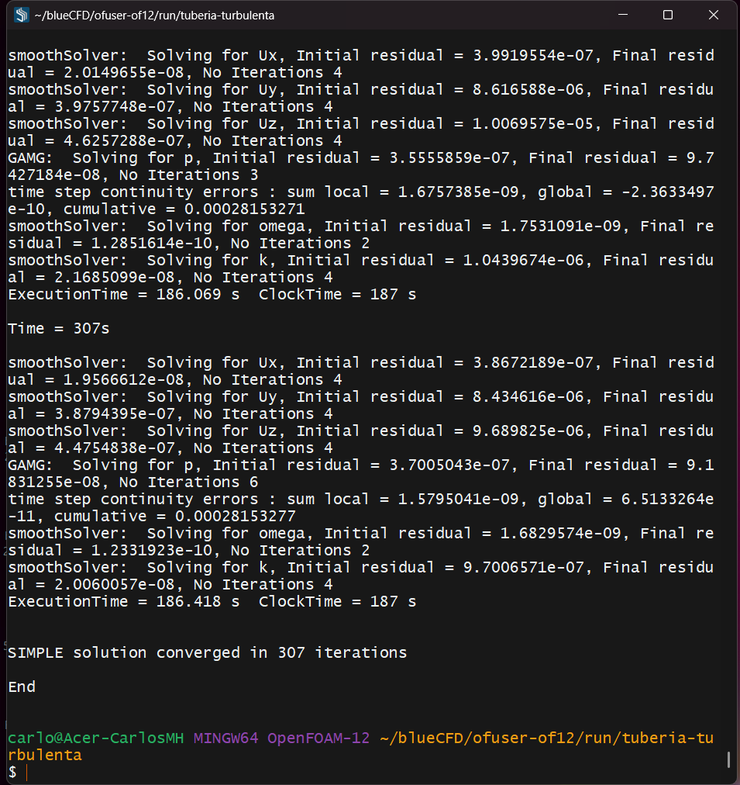
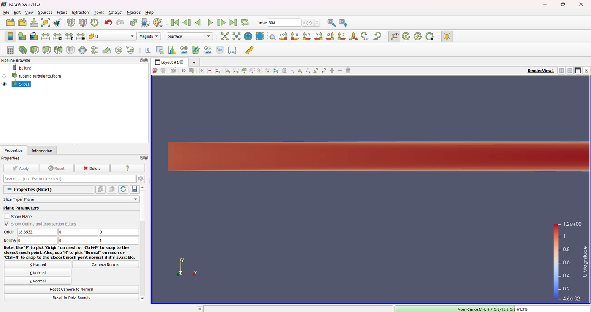
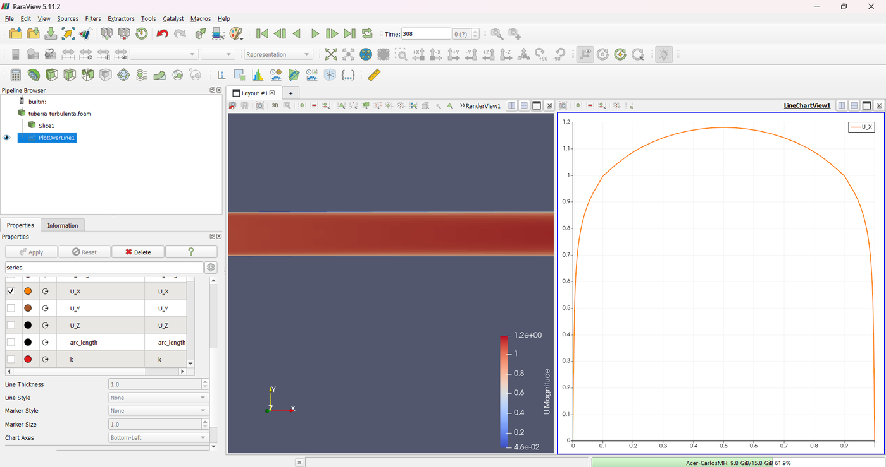

The Turbulent Pipe: k-ω SST, y⁺ and the Friction Factor
The pipe of Tutorial 1.1 at Re = 50 000. With the first cell at y⁺ ≈ 1 and the k-ω SST model, the friction factor is compared with three correlations, and the model's own error is told apart from the mesh's.
OpenFOAM · Flujo incompresible · Tutorial 1.2
La tubería turbulenta: k-ω SST, y⁺ y el factor de fricción
La tubería del tutorial 1.1 a Re = 50 000. Con la primera celda en y⁺ ≈ 1 y el modelo k-ω SST, el factor de fricción se compara con tres correlaciones, y el error propio del modelo se separa del de la malla.
OpenFOAM · Inkompressible Strömung · Tutorial 1.2
Das turbulente Rohr: k-ω SST, y⁺ und die Rohrreibungszahl
Das Rohr aus Tutorial 1.1 bei Re = 50 000. Mit der ersten Zelle bei y⁺ ≈ 1 und dem Modell k-ω SST wird die Rohrreibungszahl mit drei Korrelationen verglichen und der Fehler des Modells von dem des Netzes getrennt.
Estimated reading: 45 minLectura estimada: 45 minLesedauer: ca. 45 minLevel: undergraduateNivel: licenciaturaNiveau: BachelorVerified on OpenFOAM 12 (blueCFD-Core 2024), Gmsh 4.15.2 and ParaView 5.11.2Verificado en OpenFOAM 12 (blueCFD-Core 2024), Gmsh 4.15.2 y ParaView 5.11.2Geprüft mit OpenFOAM 12 (blueCFD-Core 2024), Gmsh 4.15.2 und ParaView 5.11.2
Full English translation in preparation. Each section below carries a summary of its content; the complete text, figures and tables are available in the Spanish version, which the ES button above selects.
Set up a RANS case with k-ω SST: the boundary conditions of k, ω and νt and inlet values from the turbulence intensity; understand y⁺ and the wall treatment it calls for; compare the friction factor with three smooth-pipe correlations and separate model error from mesh error.
The problem
What is simulated
The same pipe and boundary conditions as Tutorial 1.1, with ν = 2·10⁻⁵ m²/s (Re = 50 000). The pipe is shorter (36.71 D) because the turbulent entrance region is shorter; the first cell is eight times thinner.
The theory
Correlations, y⁺ and the turbulence model
The Petukhov, Blasius and Colebrook correlations (0.0210, 0.0212 and 0.0209 at Re = 50 000); y⁺, the viscous sublayer and the two wall treatments; the k-ω SST model; the inlet k and ω from a 5 % intensity; the 1/7 power law.
Step by step
What changes from Tutorial 1.1
The steps of Tutorial 1.1, with gmsh -setnumber regimen 1 -setnumber Re 50000 -setnumber yplus 1. Setting walls to type wall is mandatory here. foamRun converges in 307 iterations.
The case
The turbulence files
momentumTransport with RAS and kOmegaSST; 0/k, 0/omega and 0/nut with fixed inlet values, inletOutlet at the outlet and low-Re wall conditions; upwind convection for k and ω; the solver settings for p.
Results
The flow in ParaView
The same ParaView steps as in Tutorial 1.1: a much flatter profile, with nearly all of the velocity gradient in a thin layer at the wall.
Worked example
The model against the correlations
f = 0.0192, 8.6 % below Petukhov: the model, not the mesh. The measured y⁺ (0.950) is exactly the requested one times √(f/fPetukhov). The profile lies within 1 % of the 1/7 law away from the axis; the centreline velocity overshoots its final value in the entrance region.
Common errors
What goes wrong, and what OpenFOAM says
Leaving walls as patch stops foamRun (wall functions need a wall patch); flows along z in blueCFD-Core 2024; a first cell that does not match the wall conditions; a slow pressure solver.
Suggested exercise
Wall functions at y⁺ = 30
Remesh with y⁺ = 30 and switch to wall functions (kqRWallFunction, nutkWallFunction); compare cells, iterations and friction factor.
Sources
References
Petukhov (1970), Blasius (1913) and Colebrook (1939) for the correlations; Menter et al. (2003) for k-ω SST; White's Fluid Mechanics; the OpenFOAM 12 sources.
Objetivos de aprendizaje
Qué se debe poder hacer al terminar
La misma tubería del tutorial 1.1, con cien veces menos viscosidad: a Re = 50 000 el flujo es turbulento. Ya no hay solución exacta; hay correlaciones medidas del factor de fricción y un modelo de turbulencia, k-ω SST, que las reproduce hasta donde puede. El tutorial enseña a preparar y juzgar un caso RANS, y a entender por qué la primera celda de la malla importa tanto.
Preparar un caso turbulento en OpenFOAM 12: el modelo k-ω SST, las condiciones de frontera de k, ω y νt, y los valores de entrada a partir de la intensidad de turbulencia.
Entender qué es y⁺, cómo decide la altura de la primera celda y qué condiciones de pared corresponden a y⁺ ≈ 1.
Comparar el factor de fricción con tres correlaciones de tubo liso y separar el error del modelo del de la malla.
Leer en los resultados las diferencias entre un flujo laminar y uno turbulento: el perfil de velocidad y la región de entrada.
Qué hace falta. Lo mismo que en el tutorial 1.1 —blueCFD-Core 2024 y Gmsh 4.15.2— y el caso, tuberia-turbulenta.zip. Conviene haber hecho antes el 1.1: aquí los pasos que son iguales se dicen en corto, y la guía se detiene en lo que cambia.
El problema
Qué se va a simular
La geometría y las condiciones de frontera de velocidad y presión son las del caso laminar: diámetro de 1 m, velocidad uniforme de 1 m/s en la entrada y presión cero en la salida (figura 1). La viscosidad cinemática baja a 2·10−5 m²/s, y con ella el número de Reynolds sube a 50 000.
Figura 1.La tubería. No está a escala: la tubería mide 36.71 D de largo. Como en el tutorial 1.1, la malla se hizo con el eje en z y se giró al eje x con transformPoints.
La tubería es más corta que la laminar, 36.71 D, porque la región de entrada turbulenta es más corta: la mezcla turbulenta desarrolla el perfil más rápido. Las sondas están en x = 28 D y x = 34 D, y el perfil se mide en x = 31 D.
Dato
Valor
Dónde se fija
Diámetro y velocidad media
D = 1 m, U = 1 m/s (uniforme en la entrada)
tuberia.geo, 0/U
Viscosidad cinemática, \(\nu\)
2·10−5 m²/s
constant/physicalProperties
Número de Reynolds
49 999
tuberia.geo: -setnumber Re 50000
Modelo de turbulencia
k-ω SST
constant/momentumTransport
Turbulencia en la entrada
intensidad de 5 %, escala 0.07 D
0/k, 0/omega
Longitud de la tubería
36.706 D (longitud de entrada de White más 10 D)
tuberia.geo: -setnumber regimen 1
Primera celda junto a la pared
y⁺ = 1: altura 0.000782 m
-setnumber yplus 1
Malla
149 940 hexaedros; 18 celdas en el anillo de la pared, 147 capas a lo largo del eje
tuberia.geo
Tabla 1.Datos del caso. Lo que cambia respecto al tutorial 1.1 es la viscosidad, el modelo de turbulencia y la malla; la geometría y las condiciones de frontera de U y p son las mismas.
La malla sale del mismo tuberia.geo, con otros parámetros: la primera celda es ocho veces más delgada que en el caso laminar y el anillo de la pared tiene 18 celdas en lugar de 8. La sección siguiente explica por qué.
La teoría
Correlaciones, y⁺ y el modelo de turbulencia
El factor de fricción
Se define igual que en el tutorial 1.1, con la presión cinemática:
\[ f = -\frac{2D}{U^2}\,\frac{\mathrm{d}(p/\rho)}{\mathrm{d}x},\qquad \frac{\tau_w}{\rho} = \frac{f\,U^2}{8} \tag{1} \]
En régimen turbulento no hay una fórmula exacta, sino correlaciones ajustadas a mediciones. Tres de las más usadas para tubo liso (White, 2011):
Petukhov, Blasius y Colebrook
\[ f = \left(0.790\ln Re - 1.64\right)^{-2},\qquad f = 0.3164\,Re^{-1/4},\qquad \frac{1}{\sqrt f} = -2\log_{10}\frac{2.51}{Re\sqrt f} \tag{2} \]
A Re = 50 000 dan 0.0210, 0.0212 y 0.0209: difieren entre sí alrededor de 1 %, que es lo que cabe esperar de una correlación. La de Blasius es válida sólo hasta Re ≈ 105; la de Colebrook se resuelve probando valores, porque f está de los dos lados. El .geo usa la de Petukhov.
y⁺ y la primera celda
Junto a la pared, el perfil de velocidad turbulento tiene una forma universal si la distancia se mide en longitudes viscosas, \(\nu/u_\tau\):
Hasta y⁺ ≈ 5 está la subcapa viscosa, donde la velocidad crece linealmente con y⁺; pasado y⁺ ≈ 30, la zona logarítmica. Hay dos maneras de tratar la pared en un modelo RANS:
Resolver la subcapa viscosa: la primera celda en y⁺ ≈ 1 y el modelo integrado hasta la pared. Es lo que hace este tutorial.
Funciones de pared: la primera celda en la zona logarítmica, y⁺ ≈ 30–100, y la ley de la pared en lugar de resolver la subcapa. Menos celdas, menos exactitud; es la práctica sugerida.
A Re = 50 000, la longitud viscosa \(\nu/u_\tau\) vale 0.000391 m. El y⁺ se refiere al centro de la celda, así que para y⁺ = 1 la primera celda mide el doble: 0.000782 m. En el caso laminar medía 0.00632 m, 8.1 veces más. De ahí salen las 18 celdas del anillo, que crecen de la pared hacia dentro con una razón de 1.200. En la zona de entrada, donde la capa límite es delgada y el esfuerzo en la pared es mayor, el y⁺ de la primera celda sube; lo importante es que en la zona desarrollada quede cerca de 1.
El modelo k-ω SST
Un modelo RANS resuelve el flujo promedio y representa el efecto de la turbulencia con una viscosidad turbulenta \(\nu_t\), que se suma a la molecular. k-ω SST (Menter et al., 2003) la calcula con dos ecuaciones de transporte más: la de la energía cinética turbulenta, k, y la de su tasa de disipación específica, ω. Cerca de la pared se comporta como el modelo k-ω, que funciona bien hasta y⁺ ≈ 1; lejos, como k-ε.
La turbulencia de la entrada
En la entrada hay que dar k y ω. Con una intensidad de turbulencia I y una escala de longitud ℓ:
Con I = 5 % y ℓ = 0.07 D, k = 0.00375 m²/s² y ω = 1.60 1/s. Son estimaciones razonables; en la zona desarrollada la turbulencia ya no depende de ellas.
El perfil y la velocidad del eje
Una aproximación empírica al perfil turbulento es la ley de potencia 1/7:
No es válida junto a la pared (su derivada ahí es infinita) y el exponente cambia con Re, pero sirve para ver la forma: mucho más plana que la parábola laminar.
La longitud de entrada
El .geo usa la estimación de White (2011) para régimen turbulento, \(L_e/D \approx 4.4\,Re^{1/6}\), que a Re = 50 000 da 26.7 D.
Paso a paso
Lo que cambia respecto al tutorial 1.1
Los pasos son los del tutorial 1.1; sólo cambia el comando de Gmsh.
Descomprimirtuberia-turbulenta.zip en Descargas, abrir la terminal de blueCFD-Core y agregar Gmsh a la ruta de búsqueda:
export PATH="$PATH:/c/gmsh-4.15.2-Windows64"
Copiar el caso a la carpeta run de blueCFD con el Explorador y entrar en él:
cd $FOAM_RUN/tuberia-turbulenta
Hacer la malla, ahora con tres parámetros que cambian el régimen, el número de Reynolds y el y⁺ de la primera celda:
En log.gmsh quedan las cifras que calculó el .geo:
Re = 50000 f = 0.0209576 nu/u_tau = 0.000390754 m
y+ = 1 -> primera celda h1 = 0.000781509 m (0.000781509 D)
anillo: 18 celdas con razón 1.19988, de 0.000781509 m a 0.0173098 m (la banda sigue con 0.04 m)
longitud de entrada Le = 26.7063 D; tubería L = 36.7063 D en 147 capas
celdas previstas: 149940
Convertirla y girarla, como en el 1.1:
gmshToFoam tuberia.msh
transformPoints "Ry=90"
Cambiar el tipo de la pared en constant/polyMesh/boundary: walls de patch a wall, con Notepad2, y guardar. Aquí no es opcional: las condiciones de pared de k y νt exigen el tipo wall (sección «Errores frecuentes»).
Revisar la malla: checkMesh | tee log.checkMesh.
cells: 149940
Max aspect ratio = 319.76307 OK.
Mesh OK.
La razón de aspecto máxima, 320, es la de las celdas de la pared: miden 0.000782 m de alto y 0.25 m a lo largo del eje. El flujo va paralelo a su lado largo, y checkMesh la da por buena.
Correr el solver: foamRun | tee log.foamRun. En la computadora de referencia tardó 206 s (figura 2):
SIMPLE solution converged in 307 iterations
End
Ver los resultados con paraFoam.

Figura 2.El final de foamRun. Cada iteración resuelve también k y ω. Aviso de convergencia en la iteración 307.
Lo que escribe foamRun
Al empezar, foamRun dice qué modelo eligió y con qué coeficientes (printCoeffs on):
Cada iteración resuelve, además de U y p, las ecuaciones de ω y de k:
Time = 2s
smoothSolver: Solving for Ux, Initial residual = 0.61914087, Final residual = 0.056140682, No Iterations 2
smoothSolver: Solving for Uy, Initial residual = 0.41263622, Final residual = 0.030503569, No Iterations 4
smoothSolver: Solving for Uz, Initial residual = 0.41918411, Final residual = 0.03131311, No Iterations 4
GAMG: Solving for p, Initial residual = 0.22156556, Final residual = 0.18762319, No Iterations 30
time step continuity errors : sum local = 0.00034468623, global = -2.6452128e-05, cumulative = -2.830663e-05
smoothSolver: Solving for omega, Initial residual = 0.033730923, Final residual = 0.00077628223, No Iterations 2
smoothSolver: Solving for k, Initial residual = 0.53329464, Final residual = 0.013072907, No Iterations 2
ExecutionTime = 3.271 s ClockTime = 3 s
./Allrun hace todo en un comando, con el mismo comando de Gmsh.
El caso
Los archivos de la turbulencia
Sólo se reproducen los archivos que cambian respecto al tutorial 1.1. 0/U, 0/p, system/controlDict y las funciones que escriben las cifras son iguales, salvo la posición de las sondas y del perfil.
constant/physicalProperties y constant/momentumTransport
constant/physicalProperties
FoamFile
{
format ascii;
class dictionary;
location "constant";
object physicalProperties;
}
// * * * * * * * * * * * * * * * * * * * * * * * * * * * * * * * * * * * * * //
viscosityModel constant;
nu [0 2 -1 0 0 0 0] 2e-05; // Re = U D / nu = 50000 con U = 1 m/s y D = 1 m
// ************************************************************************* //
Figura 3.El modelo de turbulencia.constant/momentumTransport abierto con doble clic en el Explorador: simulationType RAS y model kOmegaSST.
simulationType RAS: promedio de Reynolds, con un modelo para la viscosidad turbulenta; model kOmegaSST, el modelo; printCoeffs on, que escriba al empezar los coeficientes que usa (todos los de fábrica).
0/k, 0/omega y 0/nut: la turbulencia
0/k
FoamFile
{
format ascii;
class volScalarField;
location "0";
object k;
}
// * * * * * * * * * * * * * * * * * * * * * * * * * * * * * * * * * * * * * //
dimensions [0 2 -2 0 0 0 0];
internalField uniform 0.00375; // intensidad del 5 %: k = 1.5 (0.05 U)^2
boundaryField
{
inlet
{
type fixedValue;
value $internalField;
}
outlet
{
type inletOutlet;
inletValue $internalField;
value $internalField;
}
walls
{
type fixedValue; // y+ ~ 1: k = 0 en la pared
value uniform 1e-10;
}
}
// ************************************************************************* //
0/omega
FoamFile
{
format ascii;
class volScalarField;
location "0";
object omega;
}
// * * * * * * * * * * * * * * * * * * * * * * * * * * * * * * * * * * * * * //
dimensions [0 0 -1 0 0 0 0];
internalField uniform 1.6; // sqrt(k)/(Cmu^0.25 l) con l = 0.07 D
boundaryField
{
inlet
{
type fixedValue;
value $internalField;
}
outlet
{
type inletOutlet;
inletValue $internalField;
value $internalField;
}
walls
{
type omegaWallFunction;
value $internalField;
}
}
// ************************************************************************* //
Entrada: k y ω fijos, con los valores de la ecuación (4).
Salida:inletOutlet, que funciona como gradiente cero mientras el flujo sale, y fija el valor si en algún momento entra por ahí.
Pared, con y⁺ ≈ 1: k prácticamente cero (se fija en 10−10, que evita divisiones entre cero); omegaWallFunction, que da a ω el valor de la subcapa viscosa cuando y⁺ es pequeño y el de la zona logarítmica cuando es grande; y nutLowReWallFunction, que deja νt = 0 en la pared y sirve para que OpenFOAM calcule y⁺.
nut no se resuelve: lo calcula el modelo en cada iteración a partir de k y ω. Su archivo sólo da las condiciones de frontera (calculated en la entrada y la salida).
Dos entradas nuevas: la convección de k y de ω con upwind, de primer orden. Son variables que varían mucho junto a la pared y que no aparecen en las cifras de la validación; el primer orden las hace más robustas sin cambiar el resultado de U y p, que siguen con linearUpwind.
"(U|k|omega)": una expresión regular que aplica el mismo solver a las tres variables.
relTol 0.1 y maxIter 30 para p: con celdas tan delgadas junto a la pared, GAMG tardaba más de cien iteraciones en cada paso; bastan pocas, porque SIMPLE corrige la presión en cada iteración de todas formas.
residualControl: 10−4 para p y 10−5 para las demás, un orden de magnitud más holgado que en el caso laminar.
Resultados
El flujo en ParaView
Los pasos en ParaView son los del tutorial 1.1: Apply, Last Frame, Slice con Z Normal y sin Show Plane, color por U, vista -Z y Zoom to Box sobre la entrada (figura 4); después, con tuberia-turbulenta.foam seleccionado, Plot Over Line de (31, −0.49999, 0) a (31, 0.49999, 0) con sólo U_X (figura 5).

Figura 4.El corte longitudinal, cerca de la entrada. Los mismos pasos del tutorial 1.1. La capa de fluido lento junto a la pared es tan delgada que a esta escala apenas se distingue: el núcleo ocupa casi toda la sección.

Figura 5.El perfil en ParaView.Plot Over Line de (31, −0.49999, 0) a (31, 0.49999, 0), con sólo U_X.
La diferencia con el caso laminar salta a la vista: el perfil es casi plano en el centro, con un máximo de apenas 1.18 veces la velocidad media, y cae a cero en una capa muy delgada junto a la pared.
Ejemplo resuelto
El modelo contra las correlaciones
Enunciado. Comparar el factor de fricción de la simulación con las tres correlaciones de la ecuación (2), comprobar que la primera celda quedó en y⁺ ≈ 1 y comparar el perfil con la ley 1/7. Condiciones: el caso sin cambios, Re = 50 000; los valores de la última iteración, 307.
Y del esfuerzo en la pared (wallShearStress.dat), \(f = 8\tau_w/(\rho U^2)\) = 0.01903. La tabla 2 compara con las correlaciones.
f
Simulación (sondas) contra ella
Simulación, de la caída de presión entre las sondas
0.01915
—
Simulación, del esfuerzo en la pared
0.01903
—
Petukhov (1970)
0.02096
−8.6 %
Blasius (1913)
0.02116
−9.5 %
Colebrook (1939), tubo liso
0.02089
−8.3 %
Tabla 2.El factor de fricción contra tres correlaciones. Las tres correlaciones son para tubo liso. Simulación: OpenFOAM 12 (blueCFD-Core 2024), k-ω SST, 307 iteraciones.
La simulación da un factor de fricción 8.6 % menor que el de Petukhov. Es el modelo, no la malla: en el tutorial 3.1.2 de Gmsh, una malla 2.7 veces más fina cambió f sólo 0.5 %, y las correlaciones difieren entre sí en 1 %. La diferencia es propia de k-ω SST: el modelo, con sus coeficientes de fábrica, no reproduce exactamente la fricción de una tubería lisa.
y⁺
# y+ ()
# Time patch min max average
307 walls 9.49794450e-01 1.76789685e+00 9.69897799e-01
El mínimo, 0.950, está en la zona desarrollada; se pidió 1. No es un error del .geo: el y⁺ que mide OpenFOAM usa la velocidad de fricción de la propia simulación, y como \(u_\tau \propto \sqrt f\) (ecuación 3), si el modelo da una f 8.6 % menor, el y⁺ debe salir \(\sqrt{f/f_{\text{Petukhov}}}\) = 0.956 del pedido. Es lo que sale. El máximo, 1.77, está junto a la entrada, donde el esfuerzo en la pared es mayor; sigue dentro de la subcapa viscosa.
En la segunda sonda, \(u_c\) = 1.177 U, contra 1.224 U de la ley 1/7 (−3.9 %). Fuera del eje, el perfil queda a 1 % de esa ley (figura 6 y tabla 3); en el eje, la ley 1/7 da un pico que el perfil real no tiene.
Figura 6.El perfil de velocidad. Archivo postProcessing/radial/307/line.xy, del eje a la pared, en x = 31 D. Con la misma velocidad media, el perfil turbulento es casi plano en el centro y cae bruscamente junto a la pared, donde está casi todo el gradiente de velocidad: por eso la primera celda tiene que ser tan delgada.
La región de entrada
La velocidad del eje se comporta distinto que en el caso laminar: sube por encima de su valor final, alcanza 1.186 U en x = 24.1 D, y después baja despacio (figura 7). Por eso no se puede medir la longitud de entrada con el criterio del 99 %: la velocidad del eje llega al 99 % de su valor en la segunda sonda en x = 16.0 D, pero todavía no está desarrollada. Entre las dos sondas, a 28 y 34 D, la velocidad del eje cambia todavía 0.6 %; para el factor de fricción basta, porque el gradiente de presión ya es prácticamente constante.
Figura 7.La velocidad en el eje. Archivo postProcessing/eje/307/line.xy. A diferencia del caso laminar, la velocidad del eje sube por encima de su valor final (1.186 U en x = 24.1 D) y luego baja despacio: al final de la tubería vale 1.174 U. Por eso el criterio del 99 % no sirve para medir la longitud de entrada turbulenta.
Magnitud
Referencia
Simulación
Diferencia
Factor de fricción
0.0210 (Petukhov)
0.0192
−8.6 %
Velocidad en el eje, \(u_c/U\), en x = 34 D
1.2245 (ley 1/7)
1.1767
−3.9 %
Perfil en r/R = 0.5
1.109 (ley 1/7)
1.118
+0.8 %
Perfil en r/R = 0.9
0.881 (ley 1/7)
0.891
+1.1 %
y⁺ en la zona desarrollada (mínimo)
1 (pedido) × √(f/fPetukhov) = 0.956
0.950
−0.7 %
Tabla 3.La simulación contra la teoría. La velocidad del eje y el perfil se comparan con la ley de potencia 1/7, una aproximación empírica; y⁺, con el valor pedido corregido por la fricción que da el modelo.
¿Llegó a la solución?
Los residuos bajan hasta cumplir residualControl en la iteración 307 (figura 8).
Figura 8.La convergencia. Archivo postProcessing/residuales/0/residuals.dat. Las líneas punteadas son los límites de residualControl: 10−4 para p y 10−5 para U, k y ω. La corrida se detiene en la iteración 307, cuando se cumplen todos.
La malla está bien; el modelo tiene su propio error. y⁺ salió donde se pidió, con la corrección exacta que predice la fricción del modelo, y una malla 2.7 veces más fina cambia f sólo 0.5 %. Los 8.6 % de diferencia con Petukhov son de k-ω SST. Antes de culpar a la malla de una diferencia con una correlación, hay que medir las dos cosas por separado.
Preguntas que orientan la lectura
¿Por qué la primera celda del caso turbulento es ocho veces más delgada que la del laminar, si el diámetro y la velocidad son los mismos?
Con la ecuación (3) y el esfuerzo en la pared medido, calcule el y⁺ del centro de la primera celda. ¿Coincide con el de yPlus.dat?
El perfil turbulento tiene casi toda su variación en una capa delgada junto a la pared. ¿Qué dice eso sobre dónde se genera la pérdida de presión?
¿Por qué la velocidad del eje sobrepasa su valor final en el caso turbulento y no en el laminar? (Piense en cómo crece la capa límite turbulenta y en lo que le pasa al núcleo cuando las capas límite se encuentran en el centro.)
Errores frecuentes
Qué sale mal y qué dice OpenFOAM
La pared que se queda como patch
Si se omite el paso 5, foamRun se detiene en cuanto crea el modelo de turbulencia:
--> FOAM FATAL ERROR:
Invalid wall function specification
Patch type for patch walls must be wall
Current patch type is patch
Las funciones de pared (nutLowReWallFunction, omegaWallFunction) sólo se pueden usar en parches de tipo wall. En el caso laminar el mismo olvido no da error, pero deja vacíos los archivos de y⁺ y del esfuerzo en la pared.
blueCFD-Core 2024 y los flujos a lo largo de z
Sin transformPoints, con la tubería a lo largo de z, OpenFOAM 12 de blueCFD-Core da f = 0.0290 en lugar de 0.0192, 1.5 veces más, sin ningún aviso. Es el mismo defecto que se explica en el tutorial 1.1: el flujo principal no debe ir a lo largo de z.
Una primera celda fuera de lugar
Las condiciones de pared de este caso están pensadas para y⁺ ≈ 1. Si se hace la malla con otro y⁺ y se dejan igual, el resultado cambia sin que OpenFOAM avise. Hay que revisar siempre yPlus.dat después de correr: en la zona desarrollada, y⁺ debe quedar cerca de lo que suponen las condiciones de pared —alrededor de 1 para este caso, entre 30 y 100 para funciones de pared (práctica sugerida)—. Entre 5 y 30, en la zona de transición, ninguna de las dos es adecuada.
Una corrida que no llega a residualControl
Con relTol 0.05 para p, el valor del caso laminar, GAMG llegaba a 150 iteraciones internas en cada paso de SIMPLE (lo anota el comentario de fvSolution). Si una corrida turbulenta avanza muy despacio, conviene mirar cuántas iteraciones hace GAMG: Solving for p en cada paso antes de cambiar los esquemas.
Práctica sugerida
Funciones de pared con y⁺ = 30
Enunciado. Repetir el caso con la primera celda en la zona logarítmica, y⁺ = 30, y funciones de pared en lugar de resolver la subcapa viscosa. Comparar el factor de fricción, el número de celdas y el tiempo de cómputo. Condiciones: Re = 50 000; la malla, rehecha con -setnumber yplus 30.
El procedimiento, en corto
Copiar el caso a una carpeta nueva.
Hacer la malla con gmsh tuberia.geo -3 -setnumber regimen 1 -setnumber Re 50000 -setnumber yplus 30 -o tuberia.msh -log log.gmsh. En log.gmsh, anotar la altura de la primera celda y las celdas del anillo.
Cambiar las condiciones de pared: en 0/k, walls a type kqRWallFunction; value $internalField;; en 0/nut, a type nutkWallFunction; value uniform 0;. 0/omega se queda con omegaWallFunction, que sirve para los dos casos.
Seguir los pasos 4 a 8 de la receta y leer las sondas y yPlus.dat como en el ejemplo resuelto.
Registro de resultados
y⁺ pedido
Pared (k y nut)
Primera celda (m)
Celdas del anillo
Celdas
Iteraciones
f
Contra Petukhov
y⁺ medido (mínimo)
1
k = 0, nutLowReWallFunction
0.000782
18
149 940
307
0.0192
−8.6 %
0.95
30
kqRWallFunction, nutkWallFunction
0.02345
4
67 620
168
0.0195
−7.1 %
28.6
5
Tabla 4.Registro de resultados. Las dos primeras filas son corridas de referencia en OpenFOAM 12 (blueCFD-Core 2024), a Re = 50 000; la última es para llenarla. y⁺ = 5 cae en la zona de transición, donde ninguna de las dos condiciones de pared es la adecuada.
Preguntas que orientan la lectura
¿Cuántas celdas se ahorraron y cuánto cambió el factor de fricción? ¿Cuál de las dos corridas queda más cerca de Petukhov, y por qué eso no dice cuál de los dos tratamientos de pared es mejor?
¿Quedó el y⁺ de la zona desarrollada en la zona logarítmica? ¿Y el de la entrada?
Con funciones de pared, ¿qué parte del perfil de velocidad no puede resolver la malla? ¿Qué pasaría con una magnitud que dependa de lo que pasa dentro de la subcapa viscosa, como la transferencia de calor?
Fuentes
Referencias
Blasius, H. (1913). Das Ähnlichkeitsgesetz bei Reibungsvorgängen in Flüssigkeiten. Forschungsheft des Vereins Deutscher Ingenieure, 131.
Colebrook, C. F. (1939). Turbulent flow in pipes, with particular reference to the transition region between the smooth and rough pipe laws. Journal of the Institution of Civil Engineers, 11(4), 133–156.
Menter, F. R., Kuntz, M. y Langtry, R. (2003). Ten years of industrial experience with the SST turbulence model. En K. Hanjalić, Y. Nagano y M. Tummers (eds.), Turbulence, Heat and Mass Transfer 4 (pp. 625–632). Begell House.
Petukhov, B. S. (1970). Heat transfer and friction in turbulent pipe flow with variable physical properties. Advances in Heat Transfer, 6, 503–564.
White, F. M. (2011). Fluid mechanics (7.ª ed.). McGraw-Hill. Capítulo 6: flujo turbulento en conductos, perfiles y longitud de entrada.
OpenFOAM 12: el modelo kOmegaSST y las condiciones omegaWallFunction, nutLowReWallFunction, kqRWallFunction y nutkWallFunction, tal como los instala blueCFD-Core 2024.
Todas las cifras de la simulación salen de corridas de OpenFOAM 12 (blueCFD-Core 2024) en una laptop con Windows 11, leídas de los archivos que escribe el propio caso; las de las correlaciones, de las ecuaciones (2) y (5). Las capturas son de Notepad2, la terminal de blueCFD-Core y ParaView 5.11.2.
Lernziele
Was Sie danach können sollten
Vollständige deutsche Übersetzung in Vorbereitung. Jeder Abschnitt enthält eine Zusammenfassung; der vollständige Text mit Abbildungen und Tabellen liegt in der spanischen Fassung vor, die über die Schaltfläche ES oben erreichbar ist.
Einen RANS-Fall mit k-ω SST aufsetzen: die Randbedingungen von k, ω und νt und Einlasswerte aus der Turbulenzintensität; y⁺ und die dazugehörige Wandbehandlung verstehen; die Rohrreibungszahl mit drei Korrelationen für glatte Rohre vergleichen und Modell- von Netzfehler trennen.
Das Problem
Was simuliert wird
Dasselbe Rohr mit denselben Randbedingungen wie in Tutorial 1.1, mit ν = 2·10⁻⁵ m²/s (Re = 50 000). Das Rohr ist kürzer (36,71 D), weil der turbulente Einlauf kürzer ist; die erste Zelle ist achtmal dünner.
Die Theorie
Korrelationen, y⁺ und das Turbulenzmodell
Die Korrelationen von Petukhov, Blasius und Colebrook (0,0210, 0,0212 und 0,0209 bei Re = 50 000); y⁺, die viskose Unterschicht und die zwei Wandbehandlungen; das Modell k-ω SST; k und ω am Einlass aus 5 % Intensität; das 1/7-Potenzgesetz.
Schritt für Schritt
Was sich gegenüber Tutorial 1.1 ändert
Die Schritte aus Tutorial 1.1, mit gmsh -setnumber regimen 1 -setnumber Re 50000 -setnumber yplus 1. Der Wandtyp wall ist hier Pflicht. foamRun konvergiert nach 307 Iterationen.
Der Fall
Die Turbulenzdateien
momentumTransport mit RAS und kOmegaSST; 0/k, 0/omega und 0/nut mit festen Einlasswerten, inletOutlet am Auslass und Low-Re-Wandbedingungen; upwind-Konvektion für k und ω; die Löser-Einstellungen für p.
Ergebnisse
Die Strömung in ParaView
Dieselben ParaView-Schritte wie in Tutorial 1.1: ein viel flacheres Profil, mit fast dem gesamten Geschwindigkeitsgradienten in einer dünnen Schicht an der Wand.
Durchgerechnetes Beispiel
Das Modell gegen die Korrelationen
f = 0,0192, 8,6 % unter Petukhov: das Modell, nicht das Netz. Das gemessene y⁺ (0,950) ist genau das geforderte mal √(f/fPetukhov). Das Profil liegt abseits der Achse auf 1 % beim 1/7-Gesetz; die Achsengeschwindigkeit überschießt im Einlauf ihren Endwert.
Häufige Fehler
Was schiefgeht und was OpenFOAM meldet
walls als patch zu lassen, stoppt foamRun (Wandfunktionen brauchen einen wall-Patch); Strömungen entlang z in blueCFD-Core 2024; eine erste Zelle, die nicht zu den Wandbedingungen passt; ein langsamer Drucklöser.
Übungsvorschlag
Wandfunktionen bei y⁺ = 30
Mit y⁺ = 30 neu vernetzen und auf Wandfunktionen umstellen (kqRWallFunction, nutkWallFunction); Zellen, Iterationen und Rohrreibungszahl vergleichen.
Quellen
Literatur
Petukhov (1970), Blasius (1913) und Colebrook (1939) für die Korrelationen; Menter et al. (2003) für k-ω SST; Whites Fluid Mechanics; die Quellen von OpenFOAM 12.